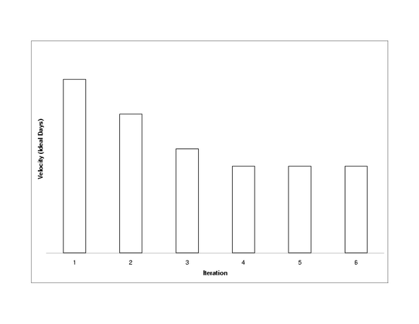
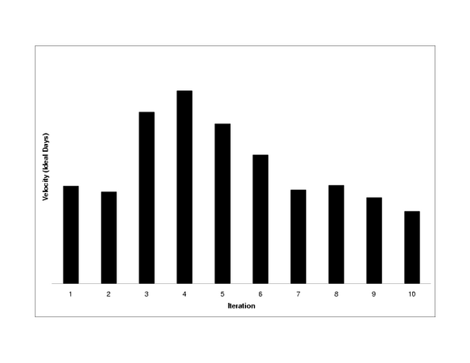
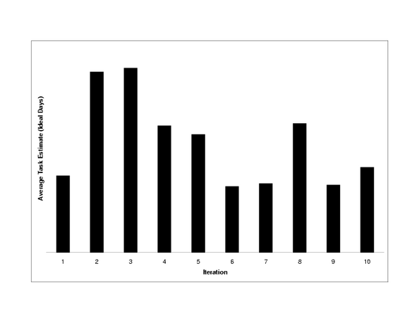

about Extreme Programming
with Perl
| Previous: Chapter 6: Acceptance Testing | Next: Chapter 8: Pair Programming | ||
XP's focus is on the here and now. The team knows how it is doing by eliciting feedback through testing and frequent releases. Sometimes this feedback is not enough to keep a project on track. Everybody strays from the path now and then, and runs the risk of getting caught in a web made by a big, hairy spider. That's why every XP project needs a tracker. Tracking in XP let's us know if we've strayed off the path. Tracking introduces feedback about how we are doing with respect to iteration and release plans. The tracker is the team member who is responsible for asking the team how far along they are with their tasks for the iteration. If the iteration is behind schedule, the tracker asks the customer to drop tasks. Intra-release feedback is generated by tracking the velocity trend. When the velocity curve is unstable, it's a sign of trouble. The role of tracker is typicially filled by a manager, but can be anybody who communicates well with the rest of the team. The tracker's job is to help find root causes as well as gather data about the project's status. To be effective, the tracker must be a perceptive listener to hear the subtle clues that lead to root causes. This chapter explains how tracking works, what's tracked, ways to keep everybody informed, and most importantly, how to get back on track if you're lost battling big, hairy spiders. Iteration TrackingIteration tracking is a polling activity. The tracker asks team members how their work is going once or twice a week. These meetings are between the tracker and one team member at a time. This keeps everyone at ease, and allows the tracker to ask personal questions if need be. To simplify tracking, try to limit task length to one ideal day. With multi-day tasks, the tracker needs to ask how much time is left to get a precise reading of the project's status. With single day tasks, the tracker need only ask whether the task is completed or not. This latter precision is enough to provide an accurate picture of the iteration's progress. Iteration tracking is not micro-management. The tracker doesn't try to control how people do things. The purpose of tracking is to find out what is happening using a simple, objective measure, such as, what tasks are done and what are their estimates. If the tracker has to ask how close a task is to being done, the measure is less objective, and the tracker may have to be more intrusive into how the team member came up with the estimate. The simple binary test ("is it done?") avoids this extra level of detail, and keeps the meetings shorter and more straightforward. After the tracking meetings, the tracker sums the estimates of completed tasks, divides the sum by the current velocity, and multiplies by 100. The result is the percentage of planned work which has been completed for this iteration. If the number is 60% and you are at the end of day three of a one week iteration, the iteration is on track. If the number is lower, the tracker needs to ask the customer to cut scope. Don't Slip the DateTraditional project management tends towards adjusting the schedule to meet reality, that is, scope is fixed, and it's the date that needs to slip. XP's view is that scope is variable, and it's more important to keep dates fixed. If you change the date, the entire team has to be involved. The team members who are on track will need new tasks (more communication). Their flow will be disrupted by an extra meeting to figure out what tasks need to be added. The cheaper alternative to slipping the date is to cut tasks. This is less costly in terms of communication. The tracker already knows which tasks are in trouble, and he is already are talking with the people who are responsible for them. The tracker's job is to make the customer aware of the problems. The programmers who are on track needn't be bothered. The customer picks which stories to drop. The tracker gives the customer the raw data (list of problematic stories) as well as your own interpretation of the factors involved. Call in the programmers to help you explain the details if need be. The better informed the customer is, the more easily she can decide what to drop. Adding TasksBelieve it or not, there are times when stories need to be added to an iteration. For example, the customer may see an important problem while using the prior iteration or a programmer may have finished all his tasks before the end of the iteration. The customer decides what to add. The tracker only involves those programmers who are available for the additional stories. Not that the cusomter must stay within budget, so tasks may need to be dropped to balance out the additions. The tracker gives the customer a list of tasks in progress to help prevent unnecessary task switching. The TrackerThe tracker must be someone who can speak directly to all team members. He needs to be a perceptive listener, because tracking is more than just numbers. It's about finding root causes and resolving them. Most problems you run into are related to the people, not the technology. And, people are needed to solve them. The role of tracker is best played by the project manager, in my opinion. Alternatively, you may want to rotate the position of Tracker throughout your project, or rotate the trackers between projects. Tracking, like management in general, needs to be understood by the whole team.[2] Rotating everybody through the position of tracker, gives the entire team the opporunity to see the forest for the trees. Release TrackingThe simplest way to track release progress is with a graph of velocity. The graph should quickly converge on a constant value, for example: 
Velocity converges when the task estimates align with actual capacity. Once this happens, velocity should remain relatively constant. Now let's take a look at a graph from a troubled project:[3] 
The project started out normally with velocity starting to converge around the third and fourth iteration. By the fifth or sixth iteration velocity started to drop off. The project was in serious trouble by the ninth iteration. The next step is figuring out why. What Goes Wrong?Finding the root cause for a velocity trend change can be difficult. In this project, we had a problem with quality which was indicated by an increase in the number of stories to fix defects. This was obvious when reviewing the story cards. When I went back to review the cards for this chapter, it struck me that the task estimates seem shorter as the project progressed. While I don't recommend tracking average task length in general, the graph illuminates the problem in this case: 
The graph shows that the average task length started dropping around the fourth iteration. In conjunction with the drop in velocity, this indicates the tasks were shorter, and we were underestimating them. These symptoms are indicative that change was harder, and were probably caused by quality issues. The team was battling the big, hairy, low quality spider. Low quality is not a root cause, rather it's a symptom of not using best practices. After reviewing the project, we attributed the poor quality to the following root causes:
In the next section, you'll see how we fixed these problems. For now, let's take a look at a few other problems you might encounter when developing with XP:
Fixing Troubled ProjectsAll of these problems can be resolved. Sometimes the solutions take courage, such as, writing unit tests for a large testless codebase or telling the customer to launch now instead of waiting for one more change. The hardest part, I find, is figuring out what is wrong in the first place. The solution in most cases is simple: stop the counter-productive behavior. Let's return to our troubled project. The customer realized there was a problem. We (the management) realized what was wrong, and the solutions were obvious. We cut scope so we could focus on improving quality. We substituted a senior developer into the project. We added some acceptance tests. And, probably most importantly, we made sure the customer was using the system. After four week-long iterations, we launched the system. We encountered a few structural issues after launch, but the project was on track, and the customer was much happier. Probably one of the hardest problems to fix is when there has been too little refactoring. Extreme Perl has a size advantage in this case. Part of the reason we were able to fix our troubled project so quickly is that there was very little code to fix. Just a few thousand lines is all we needed to solve a fairly complicated problem in Perl. If you are facing a mountain of code written in a relatively short time frame, it's likely to be bad code. Unfortunately, a mountain of code is often associated with a dearth of tests. You may end up having to throw all the code away, but the first step is to write tests to be sure you have documented the expected behavior. Once you have tests, start whittling the mountain away. The tests will make sure you don't break anything, and whittling will turn any code mountain into a codehill--pardon my metaphoritis.
Show Your StuffUp till now, being the tracker may not seem like a lot of fun. However, part of the tracker's job is encouraging people to celebrate their successes as well as helping out with failures. Everybody wants to be praised for their work. The tracker should encourage people to show off their completed work to the entire team. Success is contagious. When you see the excitement from a sweet demo, you'll be motivated to work that much harder so you can demo your cool stuff. Demonstrations are great way to maintain team spirit and momentum. Even a short e-mail explaining your result is enough. For example, you introduce a cache and improve the performance by 10 times. Send out a graph containing the performance test comparison. The tracker should organize demonstrations if they don't come about naturally. Sometimes team members are reticent to show their work. Weekly demonstrations are a good way to ensure everybody is praised for their accomplishments. Before or after lunch are good times for demos (see sidebar). Sign OffThe main indicator for how much business value has been implemented is the percentage of acceptance tests that are passing. Acceptance testing is the way we validate stories have been implemented. While this is a great way to measure where you are, it's also nice to audit the cards themselves. I like my customers to formally sign off acceptance on the story cards in an acceptance meeting. The formality helps ensure the customer, the tracker, and the cards are in sync. In large projects, there's bound to be a problem with or a feature missing from one of the stories. The customer and the tracker should read the story cards again to make sure they really are complete. Here and NowRather than trying to predict the future, XP focuses on the present with an eye on the past. We know where we are and from whence we have come. The unit tests tell the programmer if his changes are valid. The acceptance tests validate the system as a whole. The tracker knows which tasks are done and which are not. These feedback mechanisms keep everybody informed about the project's state. It's normal to have unfinished tasks at the end of an iteration. Don't worry. You'll complete them next iteration. No amount of charting, analysis, and/or forecasting will magically complete the tasks for you. If there is a pervasive planning problem, it's almost always related to the people on the project, not some technological issue. XP's practices are designed to prevent people issues from remaining hidden. The tracker's main job is to remind people what those best practices are. Footnotes
|
|||
| Previous: Chapter 6: Acceptance Testing | Next: Chapter 8: Pair Programming | ||
Copyright © 2004 Robert Nagler (nagler at extremeperl.org)
Licensed under a Creative Commons Attribution 4.0 International License.